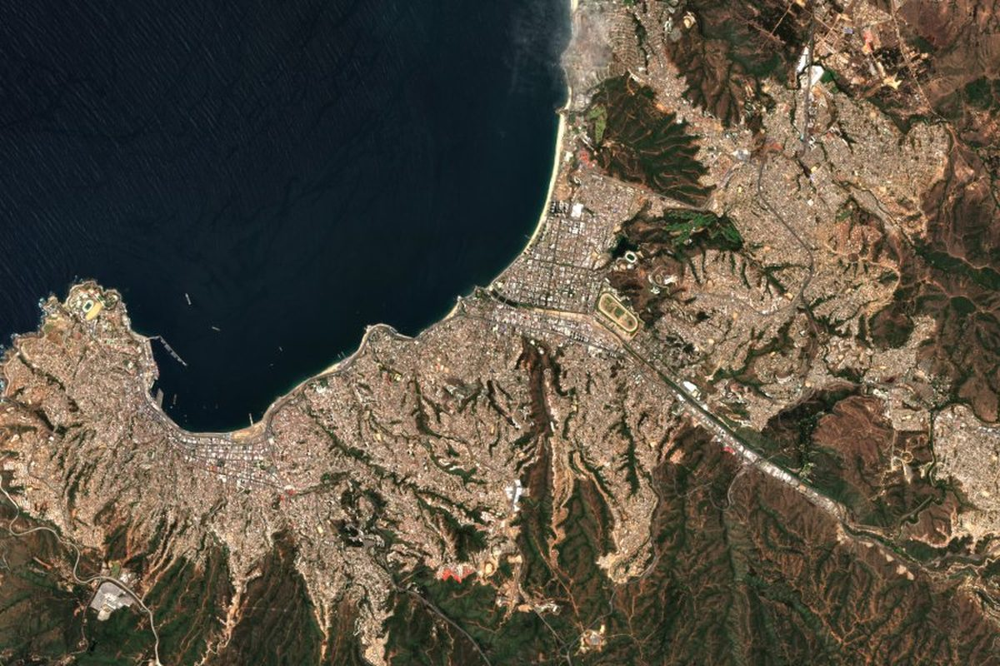

Para el caso del incendio de Viña del Mar usé dos escenas Sentinel-2 del catálogo público Earth Search. Su metadato declara que los valores traen un desplazamiento de +1000 que hay que restar para obtener la reflectancia. Los archivos de estas escenas no lo traen, y si se resta igual, el área quemada casi se duplica.
Es un error que no avisa. El código corre, el mapa se ve razonable y la cifra sale casi el doble.
Por eso el desplazamiento no se toma del catálogo. Se mide en los píxeles de agua de la propia escena, donde el infrarrojo de onda corta debería estar cerca de cero. Quedó documentado como la limitación O4 del caso, y cualquiera puede rehacer la medición con el código.
Fuentes
- Copernicus Sentinel-2 L2A, escenas S2B_19HBD_20240118_0_L2A y S2A_19HBD_20240212_0_L2A, catálogo Earth Search.
- Repositorio del caso: README, limitación O4.